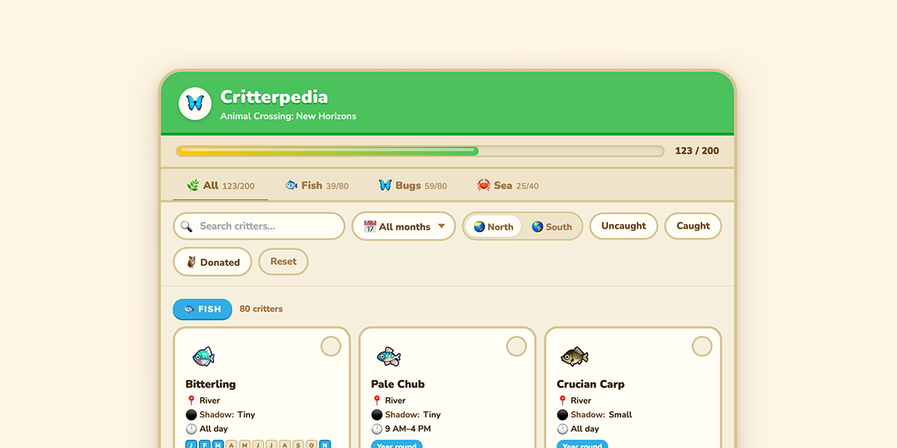

Hobby Project · Vanilla JS · Mobile-First Design
Critterpedia
A fan-built critter tracker for Animal Crossing: New Horizons — because I was frustrated the right tool didn't exist yet
Project Overview
Animal Crossing: New Horizons has 200 catchable critters — fish, bugs, and sea creatures — each available only during specific months, times of day, and hemispheres. Nintendo's in-game interface makes it nearly impossible to answer the one question every player has: what can I catch right now that I haven't caught yet?
Existing fan tools were cluttered, slow, or missing key filters. I built Critterpedia as a clean, fast, personal-use tracker that answered exactly that question — and ended up with something I still use today.
Project Details

Desktop view — filter bar, type tabs, hemisphere toggle, and the critter grid. All 200 critters, filterable to the exact ones relevant right now.
The Problem
Animal Crossing: New Horizons is a deeply beloved game with an enthusiastic community, but it has a data problem. The in-game Critterpedia shows you what you've caught — but it tells you nothing about availability windows, pricing, or what you're missing right now.
The core frustration: Every player eventually hits the same wall — standing at the ocean at 6pm in October wondering "what can I actually catch right now that I haven't caught yet?" The game gives you no way to answer that question efficiently.
Why Existing Tools Fell Short
- Too much at once: Most fan wikis and sites dump all 200 critters on a single page with minimal filtering
- Slow and ad-heavy: Popular sites like IGN and Polygon were cluttered and sluggish on mobile
- No catch tracking: Most tools had no way to mark what you'd already caught
- Poor hemisphere support: Northern and Southern Hemisphere availability is completely different — many tools ignored this
Research & Discovery
Understanding the User (Me)
This was a personal project, which meant I had unusually direct access to the primary user. I played the game daily at launch, took notes on the friction points I encountered, and talked to friends who played to validate whether my frustrations were common.
The core insight was simple: players don't need to see all 200 critters at once. They need to see the critters relevant to their current situation — their month, their time of day, their hemisphere, their catch status.
Data Modeling
Before designing anything, I spent time structuring the data. Each critter needed:
- Name, type (fish / bug / sea creature), and sell price
- Monthly availability — different for Northern and Southern Hemispheres
- Time-of-day availability windows
- Location (river, ocean, cliff, etc.)
- Rarity tier
Data lesson: Modeling 200 critters with hemisphere-specific monthly availability meant building a data structure that could be filtered efficiently in vanilla JS without a backend. Getting the data model right before touching the UI saved significant rework later.
Design Decisions
Filter-First Architecture
The entire interface was designed around filters, not a list. The default view isn't "all critters" — it's "critters available right now in your hemisphere that you haven't caught yet." Every other state is one filter toggle away.
Primary Filters
- Current month (auto-detected from system date)
- Hemisphere (Northern / Southern)
- Type (Fish / Bug / Sea Creature / All)
- Catch status (Caught / Not Yet / All)
Secondary Filters
- Time of day (morning / afternoon / night)
- Leaving soon (only available this month)
- Arriving next month
- Sort by: name, price, rarity

Default state — Bugs tab, all months, no filters active. Empty catch circles ready to track.

Month filter open — native-style picker. June selected, showing which critters are currently in season.

Filtered to Sea Creatures in June, Caught only — green checks and strikethrough names confirm what's been logged.
Card Design
Each critter card needed to communicate at a glance: what it is, when it's available, what it sells for, and whether you've caught it. I went through several iterations in Figma before landing on a compact card format that scanned well on mobile — where most players would be checking it while sitting on their couch with a Switch.
Caught critters get a green checkmark and a strikethrough on the name — a satisfying visual payoff that makes the completion progress feel tangible. The progress bar at the top of the screen shows total completion across all 200 critters.
Catch Tracking Without an Account
I didn't want to build a login system for a hobby project. Instead, catch status is saved to localStorage — persistent across sessions on the same device, zero friction to start using. The tradeoff is obvious (no cross-device sync) but for a solo player using one device, it works perfectly.
Mobile-First
The primary use case is a player sitting with their Nintendo Switch, checking their phone. I designed the mobile layout first and worked up to desktop, not the other way around. The filter panel collapses on mobile for easy thumb access.
Results & Impact
What I Learned
Data Modeling is Design
The quality of the data structure determines the quality of the filter experience. Spending time upfront to model 200 critters correctly — with hemisphere-aware monthly arrays — made the filtering logic clean and reliable. Cutting corners on data modeling would have made the UI feel broken even if it looked fine.
Constraints Are a Gift
No backend, no budget, no team. These constraints forced cleaner decisions: localStorage instead of a database, vanilla JS instead of a framework, static hosting instead of a server. The result is a tool that's faster and more reliable than it would have been with more resources.
The bigger takeaway: Personal projects built to scratch your own itch are some of the best design exercises. You're simultaneously the researcher, the designer, the developer, and the most demanding user. There's nowhere to hide from a bad decision.
What I'd Do Differently
- Cross-device sync: A lightweight sync option (even just a shareable URL with encoded catch state) would meaningfully improve the experience for players who switch between devices
- Villager data: The same filtering approach would work beautifully for Animal Crossing's 400+ villagers — I just never got around to building it
- Community version: The data model could support multiple games in the franchise. A more generalized version with community-contributed data would have broader reach